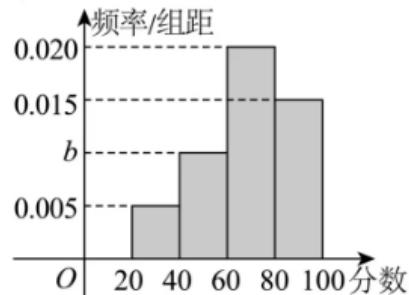

二项通项、指定项与赋值求和
明确幂指数及通项，先列指数方程；系数和优先考虑赋值而非逐项展开。
嘉定 · 第5题 ★★☆☆☆ · 教师预估
本题资料或解析有待核事项，预览不可作为已审定成品。
在 6 的二项展开式中，常数项的值为
奉贤 · 第4题 ★★☆☆☆ · 教师预估
本题资料或解析有待核事项，预览不可作为已审定成品。
在 的二项展开式中，常数项为________。（用数字作答）
宝山 · 第6题 ★★☆☆☆ · 教师预估
本题资料或解析有待核事项，预览不可作为已审定成品。
6 的二项展开式中， 项的系数为
崇明 · 第9题 ★★☆☆☆ · 教师预估
若 ，则
普陀 · 第6题 ★☆☆☆☆ · 教师预估
设t ∈ R，若 6的展开式中x3项的系数为10，则t =
杨浦 · 第6题 ★★☆☆☆ · 教师预估
本题资料或解析有待核事项，预览不可作为已审定成品。
6 的二项展开式中的常数项为
松江 · 第5题 ★★☆☆☆ · 教师预估
本题资料或解析有待核事项，预览不可作为已审定成品。
6 的二项展开式中的常数项为
浦东 · 第7题 ★★☆☆☆ · 教师预估
本题资料或解析有待核事项，预览不可作为已审定成品。
的展开式中，常数项为
金山 · 第5题 ★★☆☆☆ · 教师预估
本题资料或解析有待核事项，预览不可作为已审定成品。
在 展开式中x的系数为80，则实数a的值为
闵行 · 第5题 ★★☆☆☆ · 教师预估
本题资料或解析有待核事项，预览不可作为已审定成品。
在 6 的二项展开式中，常数项是 ．（用数值作答）
青浦 · 第3题 ★★☆☆☆ · 教师预估
本题资料或解析有待核事项，预览不可作为已审定成品。
6的二项展开式中x3项的系数是20，则实数a的值是
排列组合公式与分步分类
区分有序无序、允许重复与相邻约束，划分互斥情形再使用乘加法则。
奉贤 · 第13题 ★★☆☆☆ · 教师预估
下列有关排列组合数的计算公式，错误的是（ ）
A. （m，n是正整数，且
B. ，n是正整数，且
C. ，n是正整数，且
D. ，n是正整数，且
宝山 · 第10题 ★★★☆☆ · 教师预估
有3件商品的编号分别为 ，它们的售价（元） ，且满足 ，则这3件商品售价的所有可能情况有 种.
杨浦 · 第14题 ★☆☆☆☆ · 教师预估
3名同学报名参加社团活动，有4个社团可以报名，这些社团招收人数不限，但每位同学只能报名其中1个社团，则这3位同学可能的报名结果共有（ ）种.
A. 6
B. 24
C. 64
D. 81
松江 · 第7题 ★★☆☆☆ · 教师预估
有4辆车停放在5个并排车位上，客车甲车体较宽，停放时需要占两个车位，并且乙车与客车甲相邻停放，则共有 种不同的停放方法.
有限集合与受限序列计数
由间断、间距、原像或前缀和限制识别合法结构，必要时用补集与递推。
崇明 · 第12题 ★★★☆☆ · 教师预估
本题资料或解析有待核事项，预览不可作为已审定成品。
已知集合M中的任一个元素都是整数，当存在整数 且 c时，称M为“间断整数集”．集合 的所有子集中，是“间断整数集”的个数为
徐汇 · 第16题 ★★★★☆ · 教师预估
本题资料或解析有待核事项，预览不可作为已审定成品。
已知函数 的定义域和值域都为R，且图像是一条连续不断的曲线，其导函数 的值如下表：
| 0 | 0 |
设 ，若集合 ，其中 为常数，则符合要求的集合 的个数不可能是（ ）。
A. 3
B. 27
C. 63
D. 343
普陀 · 第9题 ★★★☆☆ · 教师预估
本地版本的第9、10题题号顺序存在冲突；本题子集范围的表述也须核正式原卷。
设i,j,n为正整数，集合 ，若集合A满足 ，且对A中任意的两个元素 皆有 立，记满足条件的集合A的个数为 ，则
浦东 · 第12题 ★★★★☆ · 教师预估
本题资料或解析有待核事项，预览不可作为已审定成品。
已知数列 ，并且前n项的和 满足：
①存在小于1013的正整数t，使得 ；
②对任意的正整数k和m，都有
则满足以上条件的数列 共有 个
抽样概率中的组合计数
先锁定样本空间和条件事件，再计数；大题保留统计与期望小问。
嘉定 · 第9题 ★★☆☆☆ · 教师预估
在由1，2，3，4，5这五个数组成的无重复数字的四位数中，其能被3整除的概率为
宝山 · 第19题 ★★★★☆ · 教师预估
本题资料或解析有待核事项，预览不可作为已审定成品。
某游乐园的活动项目共有三类，分别是“过山车”等10个体验类项目、“海豚之舞”等4个表演类项目、“智力闯关”等3个互动类项目.因设备维护需要，项目并非每日都全部开放.以下数据是项目开放的数量x（个）和游客平均等待时间y（分钟/个）的关系：
| 类别 | 体验类 | 体验类 | 体验类 | 体验类 | 体验类 | 演出类 | 演出类 | 互动类 | 互动类 |
|---|---|---|---|---|---|---|---|---|---|
| 开放数量 | 4 | 5 | 6 | 7 | 8 | 2 | 4 | 2 | 3 |
| 平均等待时间 | 76 | 73 | 67 | 60 | 53 | 30 | 46 | 30 |
(1) (4分)体验类项目中，若y关于x的回归方程为 ，请计算m的值，并依据该模型预测所有体验类项目均开放时的平均等待时间（精确到整数）；
(2) (4分)小王游玩当日，体验类、演出类、互动类项目分别开放了8个、4个、3个，他计划随机游玩其中的3个项目，已知他选择的项目中至少包含1个互动类项目，求他的等待总时间恰为120分钟的概率；
(3) (6分)为提高游客的参与度，园方在互动类项目“智力闯关”中设计了两关.通过第一关的游客奖励20个游园币，游客可以选择结束或继续闯关.若继续闯关，则必须完成第二关的所有题目.第二关包含2道相互独立的选择题，每答对1题可再奖励20个游园币，每答错1题则要扣除10个游园币。每个游园币可兑换园区内任意一个项目的1分钟等待时间.小王已通过第一关，假设他在第二关中每道题答对的概率均为p，为了获得更多项目等待时间的兑换奖励，小王是否应该继续闯关？请你帮他做出决策.
崇明 · 第15题 ★★★☆☆ · 教师预估
本题资料或解析有待核事项，预览不可作为已审定成品。
抛掷一枚质地均匀的硬币n次（其中n为大于等于2的整数），设事件A表示“n次中既有正面朝上又有反面朝上”，事件B表示“n次中至多有一次正面朝上”，若事件A与事件B是独立的，则n的值为（ ）
A. 5
B. 4
C. 3
D. 2
崇明 · 第19题 ★★★☆☆ · 教师预估
本题资料或解析有待核事项，预览不可作为已审定成品。
某区2025年3月31日至4月13日的天气预报如图所示。

(1)（4分）从3月31日至4月13日某天开始，连续统计三天，求这三天中至少有两天是阵雨的概率；
(2)（4分）根据天气预报，该区4月14日的最低气温是 。温差是指一段时间内最高温度与最低温度之间的差值，例如3月31日的最高温度为 ，最低温度为 ，当天的温差为 。记4月1日至4日这4天温差的方差为 ，4月11日至14日这4天温差的方差为 。若 ，求4月14日天气预报的最高气温；
(3)（6分）从3月31日至4月13日中随机抽取两天，用 表示一天温差不高于 的天数，求 的分布列及期望。
普陀 · 第19题 ★★★☆☆ · 教师预估
某区为推进教育数字化转型，通过聚合区域学校的教育资源，依托AI技术搭建了区域智慧题库系统，形成了“A通识过关—B综合拓展—C创新提升”三层动态原库，且A,B,C三层题量之比为7:3:2，设该题库中任意1道题被选到的可能性都相同.
(1) (6分)现有4人参加一项比赛，若每人分别独立地从该题库中随机选取一道题作答，求这4人中至少有2人的选题来自B层的概率；
(2) (8分)现采用分层随机抽样的方法，使用智能组卷系统从该题库中选取12道题生成试卷，若某老师要从生成的这份12道题的试卷中随机选取3道题做进一步改编，记该老师选到A层题的题数为X，求X的分布与期望E(X)
杨浦 · 第19题 ★★★★☆ · 教师预估
本题资料或解析有待核事项，预览不可作为已审定成品。
为弘扬中华民族传统文化、增强民族自豪感，某学校开展中华古诗词背诵比赛，分为初赛和复赛.全校同学都参加了初赛，并随机抽取一个班级进行初赛成绩统计，已知该班级共有40位学生，他们的初赛分数的频率分布直方图如图所示：

(1) (4分)计算b的值，并估计该校这次初赛的平均分数.
(2) (4分)初赛分数达到80及以上的同学，称为优秀参赛选手，现从班级中随机选出2位同学，用X代表其中的优秀参赛选手人数，求X的分布；
(3) (6分)为增加比赛的趣味性，复赛规则如下：复赛试题将从题库中随机抽取，每位参赛选手将有机会回答填空、选择和简答各1题；每答对1题得1分，答错或不答得0分，每位选手可以自行选择回答问题的顺序，若答对一题可继续答下一题，直到3题全部答完；若答错或不答则比赛结束例如：选手甲可自行按“简答—填空—选择”顺序答题，甲答对第一题得1分，并继续回答第二题且答错得0分，结束比赛，总分为1分.
小杨作为优秀参赛选手，代表班级参加复赛.根据他初赛的答题正确频率，可估计他填空、选择和简答的答题正确概率分别为：
| 题型 | 填空 | 选择 | 简答 |
|---|---|---|---|
| 答题正确概率 | 80% | 90% | 80% |
若小杨每次答题的结果都相互独立，那么为尽量在比赛中获得较高分数，小杨应该采用怎样的答题顺序？请说明理由.
青浦 · 第19题 ★★★★☆ · 教师预估
本题资料或解析有待核事项，预览不可作为已审定成品。
某工厂生产某款电池，在满电状态下能够持续放电时间不低于10小时的为合格品，工程师选择某台生产电池的机器进行参数调试，在调试前后，分别在其产品中随机抽取样本数据进行统计，制作了如下的2×2列联表：
(1) (4分)根据表中数据，依据 的独立性检验，能否认为参数调试与产品质量有关联；
(2) (4分)现从调试前的样本中按合格和不合格，用分层随机抽样法抽取8件产品重新做参数调试，再从这8件产品中随机抽取3件做对比分析，记抽取的3件中合格的件数为X，求X的分布列和数学期望；
(3) (6分)用样本分布的频率估计总体分布的概率，若现在随机抽取调试后的产品1000件，记其中合格的件数为Y，求使事件“Y = k”的概率最大时k的取值.
参考公式及数据： ，其
静安 · 第11题 ★★★☆☆ · 教师预估
从m个男生和n个女生 中任选2个人当队长，假设事件A表示选出的2人性别相同，事件B表示选出的2人性别不同．如果事件A的概率和事件B的概率相等，那么m−n的可能值为
黄浦 · 第10题 ★★★☆☆ · 教师预估
若从2025的所有正约数中任取一个数，则这个数是一个完全平方数的概率为
整除、有限函数覆盖与整数构造
把等差条件、有限函数覆盖、整除及乘积结构转为约束；下界论证须配可达构造。
杨浦 · 第16题 ★★★★☆ · 教师预估
本题资料或解析有待核事项，预览不可作为已审定成品。
设A是由k个二次函数组成的集合，对于连续的正整数1,2,3,⋯,2025，存在二次函数
可重复)，使得f1 (1), f2 (2), f3 (3), ⋯ , f2025 (2025)是等差数列，则k的最小可能值是（ ）.
A. 507
B. 1013
C. 1519
D. 2025
虹口 · 第10题 ★★★☆☆ · 教师预估
已知9个小球的编号为1、 ，从中有放回地摸取小球三次，并依次记录其编号，若这三个编号成等差数列，则共有 种不同的摸取方法.
虹口 · 第12题 ★★★★☆ · 教师预估
本题资料或解析有待核事项，预览不可作为已审定成品。
记|A|为有限集合A中的元素个数.设 ⋅θ能被7整除}，若对于任意实数a和任意正整数 ，恒有 ，则实数ω的取值范围是
金山 · 第12题 ★★★★☆ · 教师预估
本题资料或解析有待核事项，预览不可作为已审定成品。
均是正整数，且
的值为